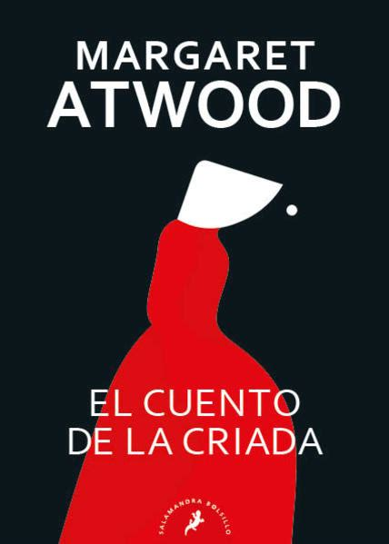
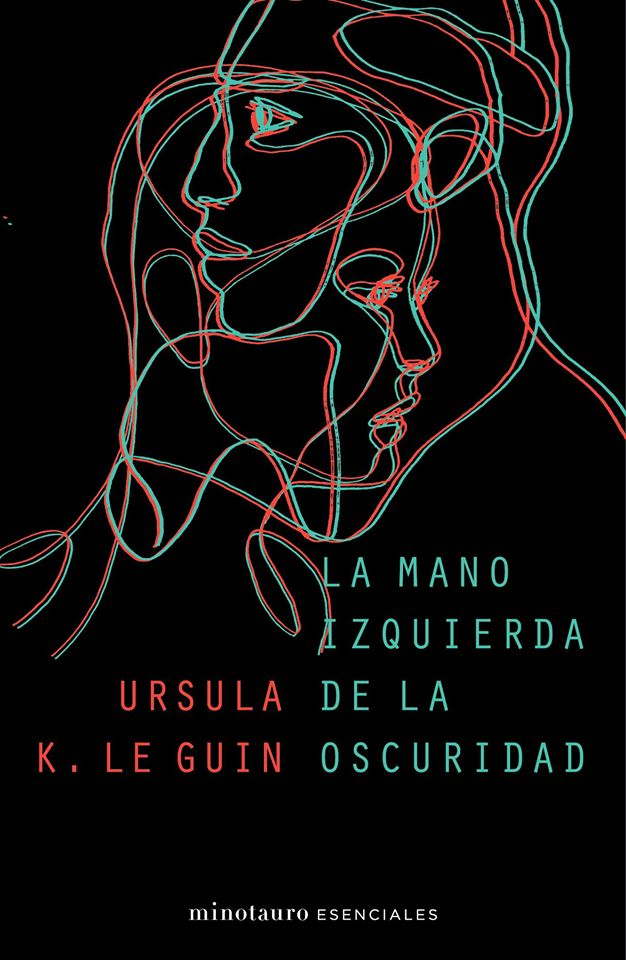
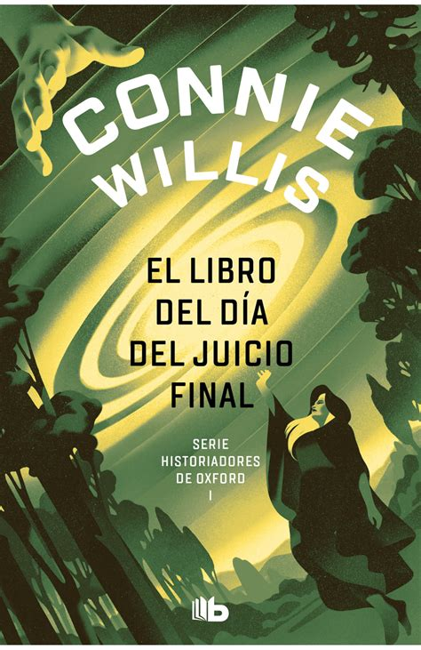
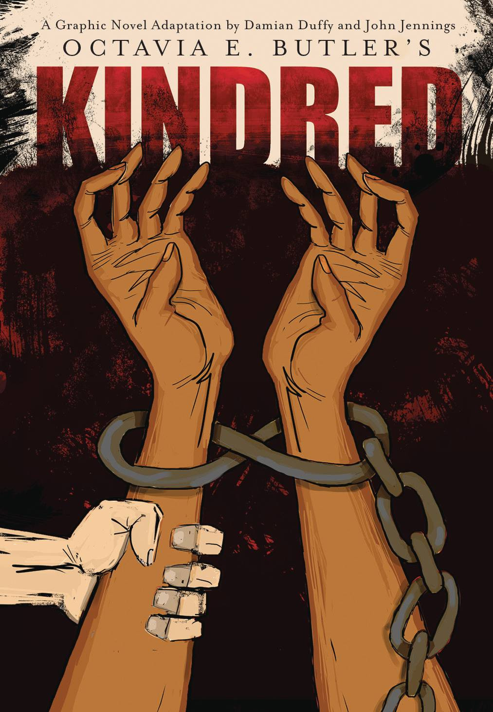
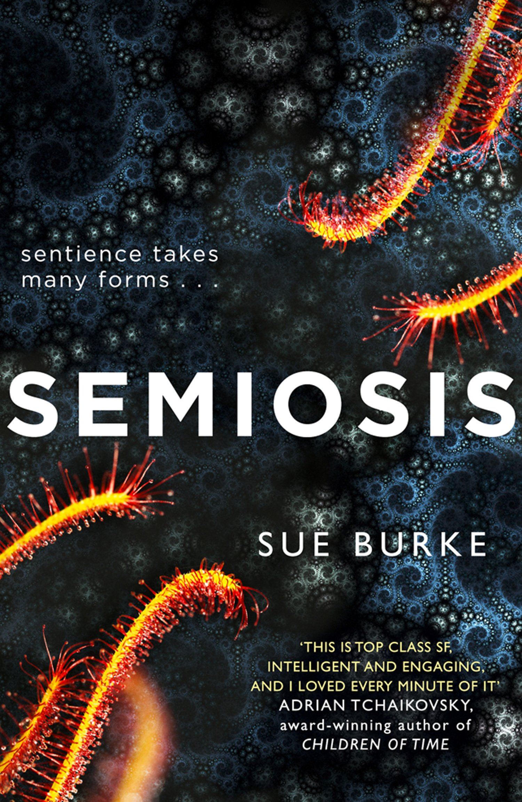

Obras de Ciencia Ficción Escritas por Mujeres
-
 "El Cuento de la Criada" - Margaret Atwood 1985, es una poderosa distopía que explora temas como la opresión, el control y la resistencia en una sociedad totalitaria donde las mujeres son subyugadas.
Con una narrativa contundente y provocativa, Atwood cuestiona las dinámicas de poder y la lucha por la autonomía.
Esta obra maestra ha dejado una huella profunda en la literatura de ciencia ficción y continúa siendo relevante en los debates sobre derechos humanos y feminismo.
-
 "La Mano Izquierda de la Oscuridad" - Ursula K. Le Guin 1969, es una innovadora novela de ciencia ficción que explora la ambigüedad de género y las relaciones humanas en el planeta invernal de Gethen.
Con una narrativa lírica y profunda, Le Guin nos invita a cuestionar nuestras percepciones sobre el género y la identidad.
Esta obra es un hito en la literatura de ciencia ficción, aclamada por su originalidad y su capacidad para desafiar las normas sociales.
-
 "El Libro del Día del Juicio Final" - Connie Willis 1992, es una apasionante novela de viajes en el tiempo que combina historia y ciencia ficción para explorar la naturaleza del sacrificio y la humanidad.
Con una trama envolvente y personajes memorables, Willis nos lleva a través del tiempo y el espacio, cuestionando las conexiones entre el pasado y el presente.
Esta obra ha ganado los prestigiosos premios Hugo y Nebula, consolidando su lugar en el canon de la ciencia ficción.
-
 "Parentesco" - Octavia E. Butler 1979, es una potente novela que mezcla la ciencia ficción con la historia, siguiendo a una joven negra de 1976 que es transportada al pasado para salvar la vida de un ancestro.
Butler aborda temas de racismo, esclavitud y resistencia con una narrativa intensa y conmovedora.
Esta obra es un ejemplo brillante de cómo la ciencia ficción puede ser utilizada para explorar y criticar las realidades sociales.
-
 "Semiosis" - Sue Burke 2018, es una novela de ciencia ficción que explora el primer contacto con una inteligencia alienígena en un planeta colonizado por humanos.
Con una narrativa innovadora y una exploración detallada de la comunicación y la supervivencia, Burke nos desafía a pensar en la naturaleza de la inteligencia y la coexistencia.
Esta obra ha sido aclamada por su originalidad y su capacidad para presentar una visión fresca del futuro.